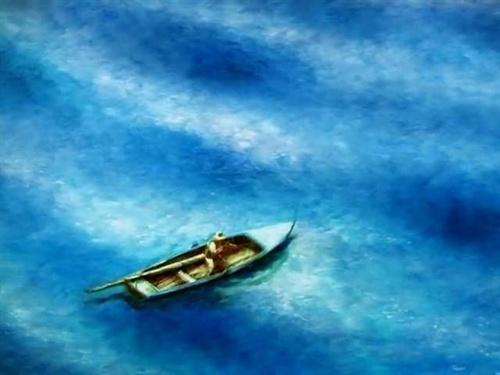
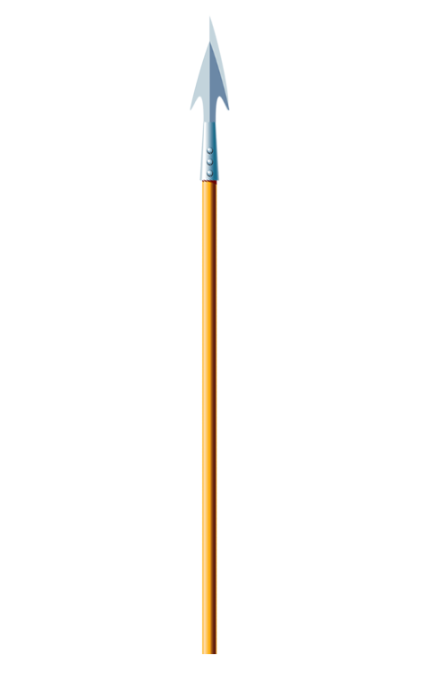

|  | |
|---|---|
Chapter 2 |
|
|
ometimes someone would speak in a boat. But most of the boats were silent except for the dip of the oars. They spread apart after they were out of the mouth of the harbour and each one headed for the part of the ocean where
he hoped to find fish. The old man knew he was going far out and he left the smell of the land behind and rowed out into the clean early morning smell of the ocean. He saw the phosphorescence of the Gulf weed in the water as he rowed over the part
of the ocean that the fishermen called the great well because there was a sudden deep of seven hundred fathoms where all sorts of fish congregated because of the swirl the current made against the steep walls of the floor of the ocean. Here there
were concentrations of shrimp and bait fish and sometimes schools of squid in the deepest holes and these rose close to the surface at night where all the wandering fish fed on them.
In the dark the old man could feel the morning coming and as he rowed he heard the trembling sound as flying fish left the water and the hissing that their stiff set wings made as they soared away in the darkness. He was very fond of flying fish as they were his principal friends on the ocean. He was sorry for the birds, especially the small delicate dark terns that were always flying and looking and almost never finding, and he thought, the birds have a harder life than we do except for the robber birds and the heavy strong ones. Why did they make birds so delicate and fine as those sea swallows when the ocean can be so cruel? She is kind and very beautiful. But she can be so cruel and it comes so suddenly and such birds that fly, dipping and hunting, with their small sad voices are made too delicately for the sea. He always thought of the sea as la mar which is what people call her in Spanish when they love her. Sometimes those who love her say bad things of her but they are always said as though she were a woman. Some of the younger fishermen, those who used buoys as floats for their lines and had motorboats, bought when the shark livers had brought much money, spoke of her as el mar which is masculine. They spoke of her as a contestant or a place or even an enemy. But the old man always thought of her as feminine and as something that gave or withheld great favours, and if she did wild or wicked things it was because she could not help them. The moon affects her as it does a woman, he thought. He was rowing steadily and it was no effort for him since he kept well within his speed and the surface of the ocean was flat except for the occasional swirls of the current. He was letting the current do a third of the work and as it started to be light he saw he was already further out than he had hoped to be at this hour. I worked the deep wells for a week and did nothing, he thought. Today I'll work out where the schools of bonito and albacore are and maybe there will be a big one with them. Before it was really light he had his baits out and was drifting with the current. One bait was down forty fathoms. The second was at seventy-five and the third and fourth were down in the blue water at one hundred and one hundred and twenty-five fathoms. Each bait hung head down with the shank of the hook inside the bait fish, tied and sewed solid and all the projecting part of the hook, the curve and the point, was covered with fresh sardines. Each sardine was hooked through both eyes so that they made a half-garland on the projecting steel. There was no part of the hook that a great fish could feel which was not sweet smelling and good tasting. The boy had given him two fresh small tunas, or albacores, which hung on the two deepest lines like plummets and, on the others, he had a big blue runner and a yellow jack that had been used before; but they were in good condition still and had the excellent sardines to give them scent and attractiveness. Each line, as thick around as a big pencil, was looped onto a green-sapped stick so that any pull or touch on the bait would make the stick dip and each line had two forty-fathom coils which could be made fast to the other spare coils so that, if it were necessary, a fish could take out over three hundred fathoms of line. Now the man watched the dip of the three sticks over the side of the skiff and rowed gently to keep the lines straight up and down and at their proper depths. It was quite light and any moment now the sun would rise. The sun rose thinly from the sea and the old man could see the other boats, low on the water and well in toward the shore, spread out across the current. Then the sun was brighter and the glare came on the water and then, as it rose clear, the flat sea sent it back at his eyes so that it hurt sharply and he rowed without looking into it. He looked down into the water and watched the lines that went straight down into the dark of the water. He kept them straighter than anyone did, so that at each level in the darkness of the stream there would be a bait waiting exactly where he wished it to be for any fish that swam there. Others let them drift with the current and sometimes they were at sixty fathoms when the fishermen thought they were at a hundred. But, he thought, I keep them with precision. Only I have no luck any more. But who knows? Maybe today. Every day is a new day. It is better to be lucky. But I would rather be exact. Then when luck comes you are ready. The sun was two hours higher now and it did not hurt his eyes so much to look into the east. There were only three boats in sight now and they showed very low and far inshore. All my life the early sun has hurt my eyes, he thought. Yet they are still good. In the evening I can look straight into it without getting the blackness. It has more force in the evening too. But in the morning it is painful. Just then he saw a man-of-war bird with his long black wings circling in the sky ahead of him. He made a quick drop, slanting down on his back-swept wings, and then circled again. "He's got something," the old man said aloud. "He's not just looking." He rowed slowly and steadily toward where the bird was circling. He did not hurry and he kept his lines straight up and down. But he crowded the current a little so that he was still fishing correctly though faster than he would have fished if he was not trying to use the bird. The bird went higher in the air and circled again, his wings motionless. Then he dove suddenly and the old man saw flying fish spurt out of the water and sail desperately over the surface. "Dolphin," the old man said aloud. "Big dolphin." He shipped his oars and brought a small line from under the bow. It had a wire leader and a medium-sized hook and he baited it with one of the sardines. He let it go over the side and then made it fast to a ring bolt in the stern. Then he baited another line and left it coiled in the shade of the bow. He went back to rowing and to watching the long-winged black bird who was working, now, low over the water. As he watched the bird dipped again slanting his wings for the dive and then swinging them wildly and ineffectually as he followed the flying fish. The old man could see the slight bulge in the water that the big dolphin raised as they followed the escaping fish. The dolphin were cutting through the water below the flight of the fish and would be in the water, driving at speed, when the fish dropped. It is a big school of dolphin, he thought. They are widespread and the flying fish have little chance. The bird has no chance. The flying fish are too big for him and they go too fast. He watched the flying fish burst out again and again and the ineffectual movements of the bird. That school has gotten away from me, he thought. They are moving out too fast and too far. But perhaps I will pick up a stray and perhaps my big fish is around them. My big fish must be somewhere. The clouds over the land now rose like mountains and the coast was only a long green line with the gray blue hills behind it. The water was a dark blue now, so dark that it was almost purple. As he looked down into it he saw the red sifting of the plankton in the dark water and the strange light the sun made now. He watched his lines to see them go straight down out of sight into the water and he was happy to see so much plankton because it meant fish. The strange light the sun made in the water, now that the sun was higher, meant good weather and so did the shape of the clouds over the land. But the bird was almost out of sight now and nothing showed on the surface of the water but some patches of yellow, sun-bleached Sargasso weed and the purple, formalized, iridescent, gelatinous bladder of a Portuguese man-of-war floating dose beside the boat. It turned on its side and then righted itself. It floated cheerfully as a bubble with its long deadly purple filaments trailing a yard behind it in the water. "Agua mala," the man said. "You whore." From where he swung lightly against his oars he looked down into the water and saw the tiny fish that were coloured like the trailing filaments and swam between them and under the small shade the bubble made as it drifted. They were immune to its poison. But men were not and when same of the filaments would catch on a line and rest there slimy and purple while the old man was working a fish, he would have welts and sores on his arms and hands of the sort that poison ivy or poison oak can give. But these poisonings from the agua mala came quickly and struck like a whiplash. The iridescent bubbles were beautiful. But they were the falsest thing in the sea and the old man loved to see the big sea turtles eating them. The turtles saw them, approached them from the front, then shut their eyes so they were completely carapaced and ate them filaments and all. The old man loved to see the turtles eat them and he loved to walk on them on the beach after a storm and hear them pop when he stepped on them with the horny soles of his feet. He loved green turtles and hawk-bills with their elegance and speed and their great value and he had a friendly contempt for the huge, stupid loggerheads, yellow in their armour-plating, strange in their love-making, and happily eating the Portuguese men-of-war with their eyes shut. He had no mysticism about turtles although he had gone in turtle boats for many years. He was sorry for them all, even the great trunk backs that were as long as the skiff and weighed a ton. Most people are heartless about turtles because a turtle's heart will beat for hours after he has been cut up and butchered. But the old man thought, I have such a heart too and my feet and hands are like theirs. He ate the white eggs to give himself strength. He ate them all through May to be strong in September and October for the truly big fish. He also drank a cup of shark liver oil each day from the big drum in the shack where many of the fishermen kept their gear. It was there for all fishermen who wanted it. Most fishermen hated the taste. But it was no worse than getting up at the hours that they rose and it was very good against all colds and grippes and it was good for the eyes. Now the old man looked up and saw that the bird was circling again. "He's found fish," he said aloud. No flying fish broke the surface and there was no scattering of bait fish. But as the old man watched, a small tuna rose in the air, turned and dropped head first into the water. The tuna shone silver in the sun and after he had dropped back into the water another and another rose and they were jumping in all directions, churning the water and leaping in long jumps after the bait. They were circling it and driving it. If they don't travel too fast I will get into them, the old man thought, and he watched the school working the water white and the bird now dropping and dipping into the bait fish that were forced to the surface in their panic. "The bird is a great help," the old man said. Just then the stern line came taut under his foot, where he had kept a loop of the line, and he dropped his oars and felt tile weight of the small tuna's shivering pull as he held the line firm and commenced to haul it in. The shivering increased as he pulled in and he could see the blue back of the fish in the water and the gold of his sides before he swung him over the side and into the boat. He lay in the stern in the sun, compact and bullet shaped, his big, unintelligent eyes staring as he thumped his life out against the planking of the boat with the quick shivering strokes of his neat, fast-moving tail. The old man hit him on the head for kindness and kicked him, his body still shuddering, under the shade of the stern. "Albacore," he said aloud. "He'll make a beautiful bait. He'll weigh ten pounds." He did not remember when he had first started to talk aloud when he was by himself. He had sung when he was by himself in the old days and he had sung at night sometimes when he was alone steering on his watch in the smacks or in the turtle boats. He had probably started to talk aloud, when alone, when the boy had left. But he did not remember. When he and the boy fished together they usually spoke only when it was necessary. They talked at night or when they were storm-bound by bad weather. It was considered a virtue not to talk unnecessarily at sea and the old man had always considered it so and respected it. But now he said his thoughts aloud many times since there was no one that they could annoy. "If the others heard me talking out loud they would think that I am crazy," he said aloud. "But since I am not crazy, I do not care. And the rich have radios to talk to them in their boats and to bring them the baseball." Now is no time to think of baseball, he thought. Now is the time to think of only one thing. That which I was born for. There might be a big one around that school, he thought. I picked up only a straggler from the albacore that were feeding. But they are working far out and fast. Everything that shows on the surface today travels very fast and to the north-east. Can that be the time of day? Or is it some sign of weather that I do not know? He could not see the green of the shore now but only the tops of the blue hills that showed white as though they were snow-capped and the clouds that looked like high snow mountains above them. The sea was very dark and the light made prisms in the water. The myriad flecks of the plankton were annulled now by the high sun and it was only the great deep prisms in the blue water that the old man saw now with his lines going straight down into the water that was a mile deep. The tuna, the fishermen called all the fish of that species tuna and only distinguished among them by their proper names when they came to sell them or to trade them for baits, were down again. The sun was hot now and the old man felt it on the back of his neck and felt the sweat trickle down his back as he rowed. I could just drift, he thought, and sleep and put a bight of line around my toe to wake me. But today is eighty-five days and I should fish the day well. |
|
